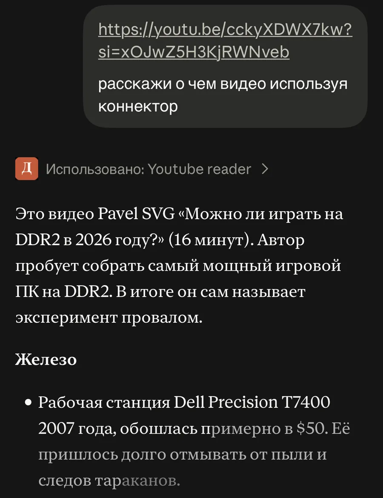
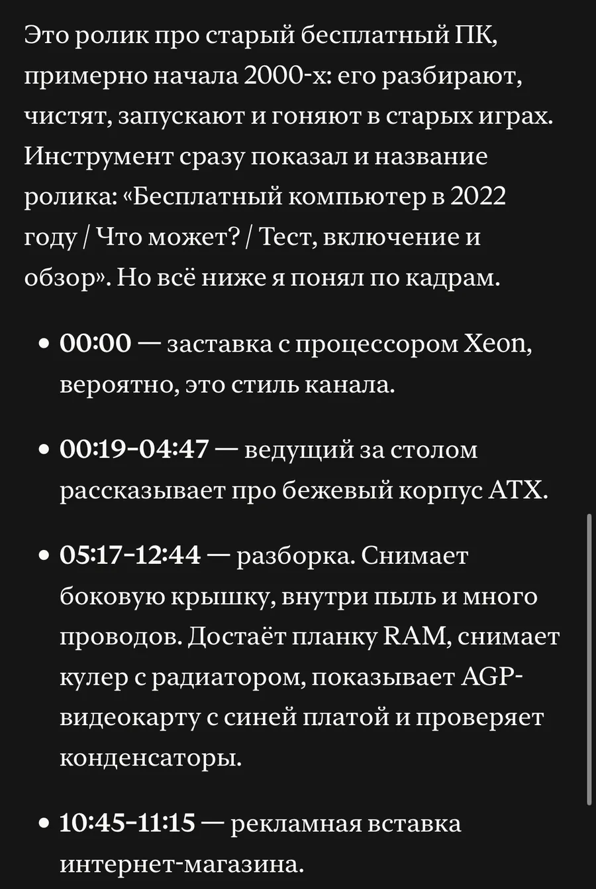

← все заметки
Часто стал просить llm-ки посмотреть за меня видео. Как правило это выражалось в скачивании субтитров через сторонний сервис и закидывании их чатботу. В итоге навайбкодил себе помощника, чтобы нейронка могла «смотреть» YouTube. Это MCP-сервер, который крутится у меня на домашнем NAS и подключён к Claude как коннектор. Внутри — yt-dlp и ffmpeg.
Сначала научил только вытаскивать субтитры. До кучи докинул поиск видео, списки роликов с канала и комментарии. А дальше захотелось, чтобы нейронка видела картинку, а не только текст. Сначала думал, что нужен сложный пайплайн с локальной моделью для распознавания. Но оказалось, что можно собрать раскадровку из тех мелких превью, что YouTube показывает при перемотке, а потом запросить чёткий кадр в нужный момент. Кадр берётся прямо из потока, ролик целиком качать не нужно.
Короче, базово достаточно информации, чтобы вытащить из видео прилично так информации.
22.11.2026#разработка #ии

Часто стал просить llm-ки посмотреть за меня видео. Как правило это выражалось в скачивании субтитров через сторонний сервис и закидывании их чатботу. В итоге навайбкодил себе помощника, чтобы нейронка могла «смотреть» YouTube. Это MCP-сервер, который крутится у меня на домашнем NAS и подключён к Claude как коннектор. Внутри — yt-dlp и ffmpeg.
Сначала научил только вытаскивать субтитры. До кучи докинул поиск видео, списки роликов с канала и комментарии. А дальше захотелось, чтобы нейронка видела картинку, а не только текст. Сначала думал, что нужен сложный пайплайн с локальной моделью для распознавания. Но оказалось, что можно собрать раскадровку из тех мелких превью, что YouTube показывает при перемотке, а потом запросить чёткий кадр в нужный момент. Кадр берётся прямо из потока, ролик целиком качать не нужно.

Короче, базово достаточно информации, чтобы вытащить из видео прилично так информации.
Комментарии